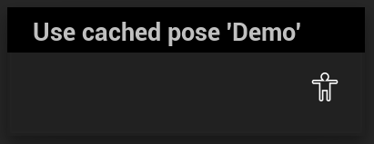

Use Cached Pose
Uses a previously cached pose.
GraphNode:
UAnimGraphNode_UseCachedPose
AnimNode:
FAnimNode_UseCachedPose

Uses a pose previously cached by a Save Cached Pose node.
This node does not exist in its pure form, but rather only exists for an already existing Save Cached Pose node. They will appear named based on their used cache in the graph like Use cached pose '<Cache Name>'.
While there can be only one node that saves to a specific cache, that same cache can be used an unlimited number of times in the graph once it is saved.
While unreal does not allow ssving cached poses in state machines, they can be used in a state machine if saved elsewhere.